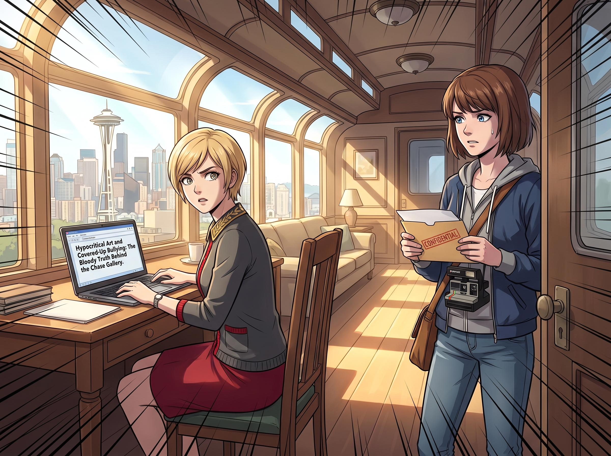

過期的瓜

這是一個西雅圖難得的晴天，但二號車廂裡的氣壓卻在短短五秒鐘內降到了絕對零度。
一切源於一封匿名群發的加密郵件，精準地發送到了 Victoria 的畫廊公用信箱、Max 的攝影工作室邀約信箱，甚至抄送了幾個西雅圖本地的藝術八卦媒體。
郵件的標題極具煽動性：《虛偽的藝術與被掩蓋的霸凌：Chase 畫廊背後的血腥真相》。
寄件人顯然是個極度無聊且自以為掌握了「流量密碼」的好事者（或許是某個被 Victoria 拒絕過的二流藝術家，又或許是單純的網路樂子人）。他在郵件裡洋洋灑灑地貼出了幾段畫質模糊的影片截圖——那是 Blackwell 學院時期，Kate 在派對上被下藥後的不雅影片截圖，以及 Victoria 當年帶頭嘲笑、霸凌 Kate 的論壇備份記錄。
不僅如此，這個好事者甚至不知從哪挖出了 Max 和 Chloe 的舊事，在郵件末尾用極其惡毒的語氣挑撥離間：「一個在好朋友父親車禍喪生當天，嚇得連夜逃回西雅圖、整整五年不聞不問的冷血騙子，現在居然和這個被拋棄的受害者，以及當年逼人跳樓的霸凌者，躲在一起裝作相親相愛的一家人？這簡直是本世紀最令人作嘔的偽善！」
好事者坐在螢幕前，滿心歡喜地期待著這顆重磅炸彈能在這個小團體內部引發核爆。他等著看 Victoria 身敗名裂，等著看 Kate 舊病復發崩潰大哭，等著看 Chloe 和 Max 因為舊恨重提而互相撕扯。
但他根本不明白，他面對的是一群經歷過什麼的怪物。
一、過期的瓜
當這封郵件在起居廂的平板電腦上被點開時，預想中的崩潰、尖叫與互相指責，一項都沒有發生。
車廂裡只有一片令人窒息的死寂。隨後，是一聲極度疲憊的嘆息。
「這白痴使用的是 2013 年阿卡迪亞灣的網路速度嗎？」Chloe 靠在沙發上，無聊地挖了挖耳朵，眼神裡連一絲憤怒都沒有，只有滿滿的嫌棄，「他居然拿幾年前的舊事來挑撥？這傢伙的情報庫是不是該更新了？」
Max 蜷縮在 Chloe 旁邊，翻了個大大的白眼，伸手把那封郵件直接丟進了垃圾桶：「他大概不知道，為了這件事，我已經道過一萬次歉，而且妳也已經原諒我一萬零一次了。這種過期的瓜，連海鷗都不吃。」
而在吧台的另一邊，Victoria 的臉色確實在一瞬間變得有些蒼白。那些截圖是她這輩子最深、最不願面對的罪惡感。她下意識地咬住下唇，名媛的驕傲在那一刻出現了裂痕，她有些慌亂地轉過頭看向 Kate。
但她還沒來得及開口，一隻溫暖、柔軟的手就輕輕覆蓋在了她微微發抖的手背上。
Kate 依然穿著那件溫柔的米色毛衣，臉上沒有任何陰霾，只有那種彷彿能包容宇宙萬物的聖潔微笑。她甚至沒有看螢幕一眼，只是輕輕反握住 Victoria 的手。
「Victoria，都過去了。那已經不是妳了。」Kate 的聲音輕柔得像是一根羽毛，卻擁有著絕對的安定力量，「我們現在是家人。家人是不會被幾張舊照片拆散的。」
Victoria 緊緊反握住 Kate 的手，深吸了一口氣，眼眶微紅，但隨即高傲地揚起下巴：「當然。這種三流的敲詐手段，連讓我動用公關部的資格都沒有。」
這就是真相。這四個人之間的羈絆，是建立在生死、時間倒流、風暴與無數次靈魂撕裂的救贖之上的。那些曾經的傷害與裂痕，早已在漫長的歲月和彼此的包容中，癒合成了一道道堅不可摧的鋼鐵防線。好事者企圖用過去來摧毀她們，就像試圖用水槍去撲滅一座正在噴發的火山一樣可笑。
二、垃圾分類
但這並不意味著，這件事情就這麼算了。
在車廂最深處的工作台前，實習生 Lily 緩緩地站了起來，推了推鼻樑上的圓框眼鏡，露出了一個完美到極致、卻讓 Chloe 都不禁打了個寒顫的笑容。
「他在褻瀆 Kate 學姐的純潔，也試圖否定 Max 學姐和 Price 學姐跨越時空的羈絆。」Lily 的聲音極度輕柔，「學姐們，請繼續享用下午茶。這個世界的垃圾分類工作，就交給我這個實習生來處理吧。」
接下來的細節，沒有人敢細問。只知道不到一小時，那個發黑函的好事者，就從一個信心滿滿的匿名帳號，變成了一個在電話裡語無倫次、聲淚俱下懇求原諒的可憐人。而他所謂的「重磅爆料」，也在十分鐘後被他自己發出的一封措辭卑微到極點的公開道歉信，徹底掩埋。
Lily 乖巧地合上筆記本電腦，重新戴上那頂可愛的草帽，走到起居廂，雙手端起剛才沒喝完的熱茶。
「垃圾已經分類處理完畢了，學姐們。」Lily 眨了眨眼睛，笑容純潔無瑕，彷彿剛才那個操控生死的金融死神根本不存在，「今天天氣真好，我們等一下要不要去買點多肉植物呀？」
Chloe 僵硬地拿著一片披薩，看了看毫髮無損的 Kate，看了看重新恢復高傲的 Victoria，又看了看身邊的 Max。
「Max……」Chloe 嚥了一口口水，聲音發抖，「我們當年到底是怎麼在那個風暴裡活下來的？」
Max 舉起茶杯，看著眼前這隻披著羊皮的終極核武，發出了一聲看透世俗的嘆息：「別問了，Chloe。只要記住一點：在這個世界上，任何人都可以挑釁我們。但如果有人敢挑釁這個家，他們就是在逼我們放狗……不，是放實習生。」
三、過去的影子
午後，Chloe 和 Max 起鬨著要拉大家去買多肉植物，Kate 也笑著跟上前張羅外出的東西。趁著眾人在門口忙著找鑰匙和外套的空檔，Victoria 端著空茶杯走進廚房，恰好撞見正在把水壺放回架上的 Lily。
車廂裡一時只剩她們兩人。
Victoria 站在流理台邊，罕見地沒有立刻開口。她看著 Lily 認真擦拭水壺的側臉，猶豫了幾秒，才用一種刻意壓低、幾乎有些生硬的語氣說道：
「Lily。」
「怎麼了，Victoria 學姐？」Lily 抬起頭，眼神依然乾淨純粹。
「今天那件事，」Victoria 的手指無意識地摩挲著杯緣，目光飄向別處，沒有敢直視她，「那些照片……不只是威脅到這個家而已。那是我自己最不想被任何人看見的一面。」
她深吸了一口氣，聲音低了下去：「謝謝妳。不是替 Kate，也不是替這個家，是替我自己，謝謝妳沒有讓那些東西被攤在陽光下重新鞭一次屍。」
Lily 愣了一下，隨即露出一個比平時更柔軟、更真實的笑容，沒有摻雜任何合規術語或行政腔調：「Victoria 學姐，妳現在已經不是那個人了。我只是不想讓一個已經改過的人，被過去的影子重新拖回原地而已。」
Victoria 別過臉，耳根微微泛紅，把空茶杯放進水槽，語氣重新恢復成慣常的高傲：「別誤會，這不代表妳這個月的加薪申請會過。」
「當然，學姐。」Lily 乖巧地笑了笑，眼底卻閃過一絲被看穿的了然。
「Victoria！鑰匙找到了嗎？」門口傳來 Chloe 的喊聲。
「來了！」Victoria 迅速恢復成平日那副從容優雅的模樣，轉身走出廚房，彷彿剛才那句遲來的、笨拙的道謝，從未發生過。
而站在原地的 Lily，看著她的背影，悄悄地、只給自己看地笑了一下。